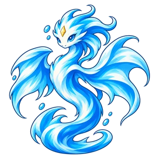

Temporada 2 · Atualização 03 · 5 de novembro
Defesa do castelo: itens que caem
- Os itens não são mais escolhidos em cartas. Eles caem no chão, seu avatar os pega a até 1,5 casas e depois você escolhe qual pelúcia fica com cada um.
- Chefe: Agora solta 2 itens comuns. Antes não soltava nenhum.
- Grande chefe: Muda de escolher 1 entre 3 itens especiais para soltar 2 itens comuns e 1~2 itens especiais.
- Sorteio de itens: Muda de escolher 1 entre 3 para cair 1 item. De vez em quando ainda sai um item especial.
- Sorteio especial: Muda de escolher 1 entre 3 para cair 1 item especial.
- Um item pego pode ser descartado, e um item no chão não desaparece. Os itens não têm mais “Novo sorteio”.
Defesa do castelo: graus dos itens e preços dos sorteios
- Agora os itens têm três graus: Comum · Especial · Lendário. As cores são branco · amarelo · laranja.
- 6 novos itens comuns: Espada Afiada (Ataque amplificado em 20%) · Varinha Mágica (Poder de Habilidade amplificado em 20%) · Armadura de Ferro (Armadura +30) · Capa Mágica (Resistência Mágica +30) · Botas Velozes (Velocidade de Ataque e de Movimento amplificadas em 10%) · Cinto Resistente (Vida amplificada em 20%).
- Item comum: Estes 6 e Fonte de mana. Agora só os itens comuns podem ser usados em dobro, e Anel guloso só come itens comuns.
- Item especial: Todos os outros itens. Uma pelúcia pode usar só 1 de cada.
- Item lendário: Anel do relâmpago · Colar da fome · Gêmeo do espelho · Coroa da tempestade · Pacto de sangue · Anel guloso. Um grande chefe solta 1 destes além dos outros itens. Eles não vêm de nenhum outro lugar.
- Sorteio de itens: Muda de 360 estrelas para 120 estrelas.
- Sorteio especial: Muda de 700 estrelas para 360 estrelas.
Defesa do castelo: jogo
- Uma pelúcia derrotada agora deixa um túmulo onde caiu, com os segundos até se levantar de novo acima dele. Ela continua se levantando na própria casa.
- Os cards de pelúcia e “Nosso time” agora sempre mostram os 2 espaços de item.
- As cores das estrelas mudam: 1 dourado · 2~4 menta · 5~9 azul-claro · 10~19 rosa · 20 ou mais branco.
- Os inimigos derrubam mais estrelas: Elites 3 → 5 (10 a partir da rodada 8) · Chefe 10 → 20 · Grande chefe 20 → 30.
- Agora todos os itens aparecem no corpo da pelúcia que os usa.
- Totem isca agora tem a aparência do pato de madeira do seu card.
- Coração imortal agora fica no campo em forma de coração. Divisão e Invocação agora têm efeitos ao ativar, e Coração imortal ao bater.
- Lâminas gêmeas: O segundo golpe agora sai da pelúcia que ataca como uma imagem residual.
- Armadura de espinhos e Capa de vampiro agora têm a aparência das suas cartas.
- Corrigida a câmera que mostrava outro lugar quando um chefe aparecia.
Mudanças por pelúcia

Serenis
- Onda Repulsora: Agora Serenis usa uma passiva própria em vez de “Correnteza Forte” de Hydris. Ao acertar um ataque básico, empurra o alvo 1 casa para longe (tempo de recarga: 4 segundos).